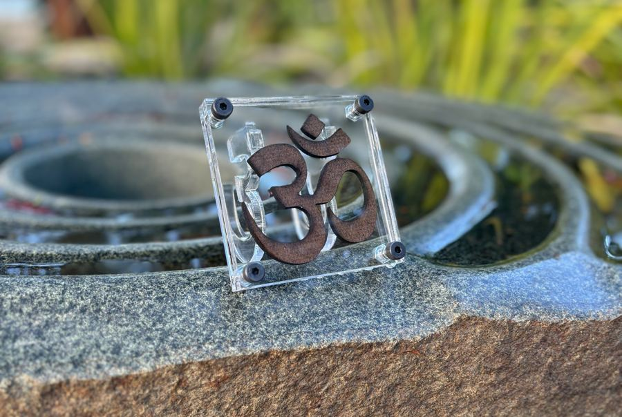
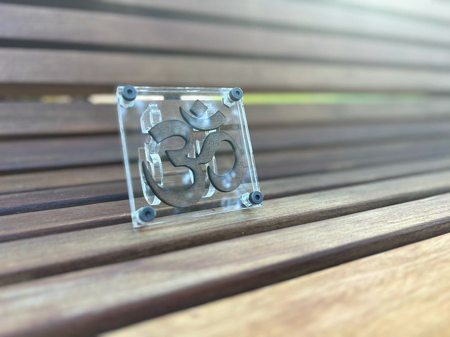
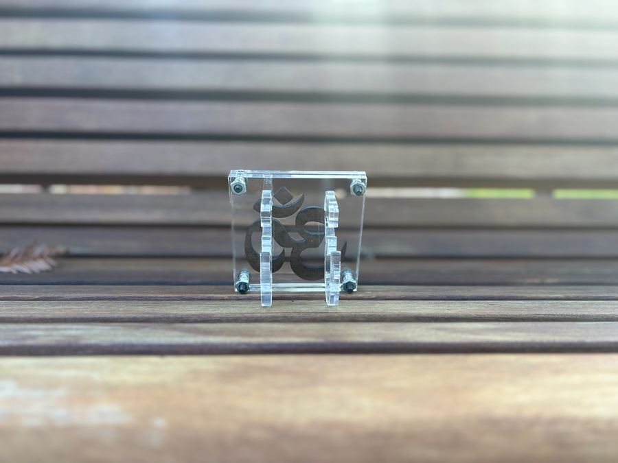
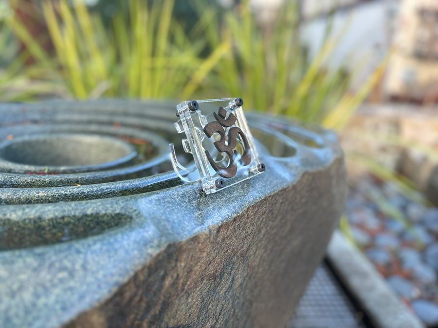
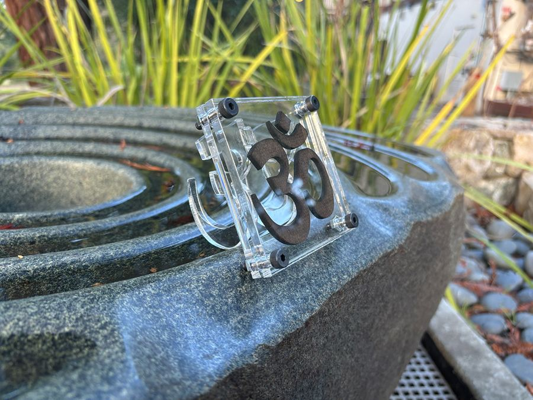
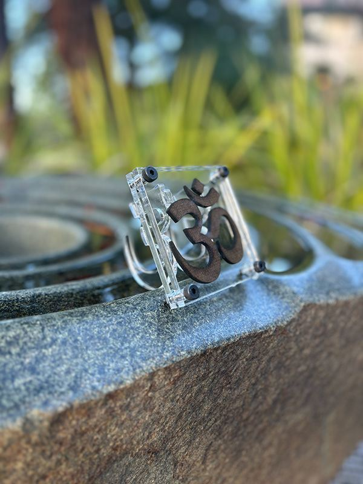
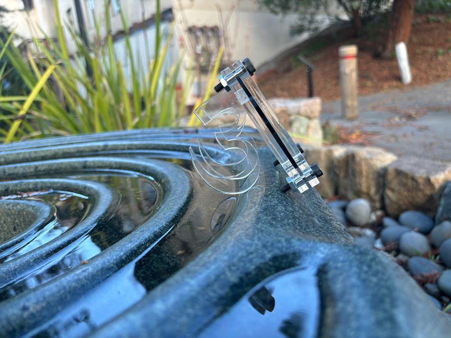

An industrial-style sculpture that reinterprets the sacred Om symbol through raw materials and bold structural form. The piece bridges spirituality and industry, setting tradition in dialogue with modern fabrication.
The Om is one of the oldest sacred symbols. This piece sets it inside an openly industrial structure: clear panels, visible fasteners, and raw materials. The contrast between the sacred form and the fabricated frame is the point of the work.






